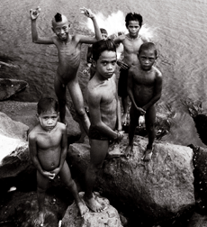

|
SQUATTERPUNK
Khavn de la Cruz | Philippinen 2007 | 79 Min.
s/w
Format: MiniDV
Material: MiniDV
Originalsprache: ohne Dialoge
Drehbuch: Khavn de la Cruz
Kamera: Albert Banzon
Schnitt: Lawrence S. Ang
Musik: Bobby Balingit, Delakrus, The
Brockas
Mit Hapon & the Isla Puting Bato Community
Produktion: Filmless Films
Grand Jury Prize, Cinemanila International Film
Festival
Definitiv kein Film für Sozialarbeiter. Khavn de la Cruz, das enfant terrible des neuen philippinischen Films, braucht keinen erhobenen Zeigefinger um eine Botschaft zu verkünden. Radikal einfach und deshalb umso effektiver zeigt er uns die Straßenkinder in den Slums von Manila. Begleitet von anarchischem Pinoy-Punk und gedreht in hartem Schwarzweiß gibt er uns einen authentischen Einblick in das Leben dieser armen, vergessenen und missachteten Kinder. Er zeigt dabei aber nicht nur das Elend, sondern auch den Spaß, den sie haben können. Ein kompromissloser Film, schnell und schmutzig produziert, und ein weiteres Beispiel für die Vitalität des unabhängigen Kinos der Philippinen.
Die Filme dieser wilden Nouvelle Vague, meist auf Mini DV gedreht, werden in zu Videokinos umfunktionierten Garagen und Ciné-Clubs gezeigt. Drei der Protagonisten dieser Bewegung sind mittlerweile auf den europäischen Festivals präsent: Lav Diaz (dessen Epos Evolution of a Filipino Family im letztjährigen Programm von Underdox lief), Khavn de la Cruz, der mittlerweile pro Jahr etwa 14 Filme dreht, und Raya Martin (siehe „Autohystoria“). Jeder von ihnen hat eine eigene persönliche Handschrift und setzt sich mit der Kinematografie des Landes ebenso auseinander wie mit der komplexen Geschichte seiner Heimat und der dort herrschenden Missstände.
Khavn de la Cruz, geboren 1973 in Manila. Er ist Filmemacher, Dichter, Autor und Komponist. Studium an der Universität Ateneo De Manila. Er ist der produktivste der philippinischen Filmemacher der „digitalen Generation“. Seit 2002 ist er Leiter des MOV Digitalfilmfestivals der Philippinen.
Filme (Auswahl): Lata at tsinelas 2004 | The Family that Easts Soil 2004| Waiting for a Super Hero 2005 | G-string Kings 2006 | An Open Letter to all the Terrorists of the World 2006| Squatterpunk 2007 | Ultimo 2007
zurück
|